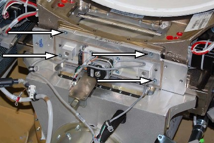

Illustration 2: Frame locator holes for guide pins

Illustration 1: Mounting Screw Locations

| NOTE: | Collimator assembly will have two guide pins. The pins are used to position the collimator inside the frame properly. The filter will fit tightly, with no gap, when the pins are properly aligned. |
Illustration 2: Frame locator holes for guide pins